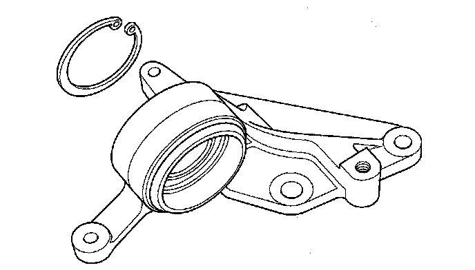

Intermediate Shaft Disassembly
Intermediate Shaft DisassemblySpecial Tools Required
^ Driver 07749-0010000
^ Support base attachment 07LAF-SM40300
^ Support base 07965-SD90100
^ Attachment, 42 x 47 mm 07746-0010300
1. Remove the heat shield.
2. Remove the intermediate shaft outer seal (A) from the bearing support (B).

3. Remove the set ring (C) and external snap ring (D).
4. Press the intermediate shaft (A) out of the intermediate shaft bearing (B) using the support base attachment (C) support base (D) and a press. Be careful not to damage the bearing support ring (E) on the intermediate shaft during disassembly.
5. Remove the internal snap ring.

6. Press the intermediate shaft bearing (A) out of the bearing support (B) using the support base attachment (C) support base (D) driver (E) attachment (F) and a press.